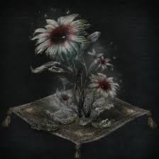
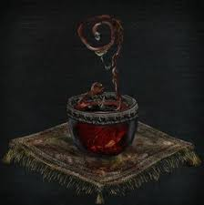
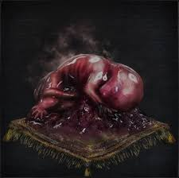
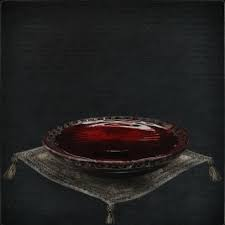

Holy Chalices |
There are a total of 24 Holy Chalices items that will give access to different dungeons.
Item Name |
Description |
|
Ailing Loran Chalice |
A chalice that breaks a labyrinth seal.
Loran is a tragic land that was devoured by the sands.
The tragedy that struck this ailing land of Loran
is said to have its roots in the scourge of the beast.
Some have made the dreaded extrapolation that
Yharnam may be next. |
 |
Ailing Loran Root Chalice |
Root Chalice that breaks multiple labyrinth seals.
Root Chalices, used in rituals to break labyrinth
seals, are said to change the labyrinth's form each time.
There are trace remains of medical procedures in
parts of ailing Loran. Whether these were attempts to
control the scourge of the beast, or the cause of the
outbreak, is unknown. |
|
Central Pthumeru Chalice |
A chalice that breaks a labyrinth seal.
But only a Root Chalice changes the shape of the
old labyrinth when used in a ritual.
The old labyrinth was carved out by the Pthumerians,
superhuman beings that are said to have unlocked
the wisdom of the eldritch Truth. |
|
Central Pthumeru Root Chalice |
Root Chalice that breaks multiple labyrinth seals.
Root Chalices, used in rituals to break old labyrinth
seals, are said to change the labyrinth's form each time.
The old labyrinth was carved out by the Pthumerians,
superhuman beings that are said to have unlocked
the wisdom of the eldritch Truth. |
|
Cursed and Defiled Root Chalice |
Root Chalice that breaks multiple labyrinth seals.
This cursed chalice makes a special ritual possible, but must
not be used lightly, as the resulting transformation can be
utterly drastic.
The old labyrinth was carved out by the Pthumerians,
superhuman beings that are said to have unlocked the
wisdom of the eldritch Truth. |
 |
Defiled Chalice |
A chalice that breaks a labyrinth seal.
Only, this defiled chalice is cursed.
Curses are caused by inciting the anger of the Great Ones,
and used to hex others. Special materials are required to
complete the ritual.
To try one's hand at curses, first seek the Bastard of Loran. |
 |
Great Isz Chalice |
A chalice that breaks a labyrinth seal.
Great chalices unlock deeper reaches of the labyrinth. The
Great Isz Chalice became the cornerstone of the Choir, the
elite delegation of the Healing Church.
It was also the first Great Chalice brought back to the
surface since the time of Byrgenwerth, and allowed the
Choir to have audience with Ebrietas. |
|
Great Pthumeru Ihyll Chalice |
A chalice that breaks a labyrinth seal.
Great chalices unlock deeper reaches of the labyrinth.
Pthumeru Ihyll was the title of both the
Pthumerian monarch and its capital.
This reveals that while early Pthumerians were mere
humble guardians of the slumbering Great Ones, their
descendants felt entitled to name themselves a leader. |
 |
Hintertomb Chalice |
A chalice that breaks a labyrinth seal.
Hintertombs are the peripheral catacombs
of the old underground labyrinth.
To this day, the Watcher continue to expand the
hintertombs, unceremonious catacombs filled with
graves and death. |
 |
Hintertomb Root Chalice |
Root Chalice that breaks multiple labyrinth seals.
Root Chalices, used in rituals to break old labyrinth
seals, are said to change the labyrinth's form each time.
The hintertombs are unceremonious homes to graves
and death, cesspools of noxious snakes and insects. |
 |
Isz Root Chalice |
Root Chalice that breaks multiple labyrinth seals.
Root Chalices, used in rituals to break labyrinth
seals, are said to change the labyrinth's form each time.
According to the Choir, the land of Izs lies in contact
with the cosmos, which allowed the Great Ones to
function on transcendental planes of thought. |
|
Lower Ailing Loran Chalice |
A chalice that breaks a labyrinth seal.
But only a Root Chalice changes the shape of the
Chalice Dungeon when used in a ritual.
There are trace remains of medical procedures in
parts of ailing Loran. Whether these were attempts to
control the scourge of the beast, or the cause of the outbreak, is unknown. |
 |
Lower Hintertomb Chalice |
A chalice that breaks a labyrinth seal.
Hintertombs are the peripheral catacombs
of the old underground labyrinth.
To this day, the Watchers continue to expand the
hintertombs, unceremonious catacombs filled with
graves and death. |
|
Lower Hintertomb Root Chalice |
Root Chalice that breaks multiple labyrinth seals.
Root Chalices, used in rituals to break old labyrinth
seals, are said to change the labyrinth's form each time.
The hintertombs are unceremonious homes to graves
and death, cesspools of noxious snakes and insects. |
 |
Lower Pthumeru Chalice |
A chalice that breaks a labyrinth seal.
But only a Root Chalice changes the shape of the
old labyrinth when used in a ritual.
The old labyrinth was carved out by the Pthumerians,
superhuman beings that are said to have unlocked
the wisdom of the eldritch Truth. |
 |
Lower Pthumeru Root Chalice |
Root Chalice that breaks multiple labyrinth seals.
Root Chalices, used in rituals to break old labyrinth
seals, are said to change the labyrinth's form each time.
The old labyrinth was carved out by the Pthumerians,
superhuman beings that are said to have unlocked
the wisdom of the eldritch Truth. |
 |
Pthumeru Chalice |
Ritual chalice found in the Church of the Good Chalice.
Use in a ritual at the tomb altar in the Hunter's Dream
to break the seal of the old underground labyrinth.
Let the chalice reveal the tomb of the gods; let blood
be the hunter's nourishment.
...And let ye partake in communion... |
|
Pthumeru Ihyll Root Chalice |
Root Chalice that breaks multiple labyrinth seals.
Root Chalices, used in rituals to break old labyrinth
seals, are said to change the labyrinth's form each time.
The Pthumerian monarch was traditionally a woman
who assumed a name with classical roots. |
 |
Pthumeru Root Chalice |
Root Chalice that breaks multiple labyrinth seals.
Root Chalices, used in rituals to break old labyrinth
seals, are said to change the labyrinth's form each time.
The old labyrinth was carved out by the Pthumerians,
superhuman beings that are said to have unlocked
the wisdom of the eldritch Truth. |
 |
Sinister Hintertomb Root Chalice |
Root chalice that breaks multiple labyrinth seals.
When used in a ritual, this sinister chalice summons the
Sinister Resonant Bell. The bell-ringing woman appears to be
a mad Pthumerian.
The hintertombs are unceremonious homes to graves and
death, cesspools of noxious snakes and insects.
**Note Additional rite Sinister Bell is for online use only.
The bell-ringing woman does not appear offline.** |
|
Sinister Isz Root Chalice |
Root Chalice that breaks multiple labyrinth seals.
When used in a ritual, this sinister chalice summons the
Sinister Resonant Bell. The bell-ringing woman appears to be
a mad Pthumerian.
According to the Choir, the land of Izs lies in contact
with the cosmos, which allowed the Great Ones to function on transcendental planes
of thought. |
|
Sinister Lower Loran Chalice |
Root chalice that breaks multiple labyrinth seals.
When used in a ritual, this sinister chalice summons the
Sinister Resonant Bell. The bell-ringing woman appears to be
a mad Pthumerian.
There are trace remains of medical procedures in parts of
ailing Loran. Whether these were attempts to control the
scourge of the beast, or the cause of the
outbreak, is unknown.
**Note Additional rite Sinister Bell is for online use only.
The bell-ringing woman does not appear offline.** |
 |
Sinister Lower Pthumeru Root Chalice |
Root chalice that breaks multiple labyrinth seals.
When used in a ritual, this sinister chalice summons the
Sinister Resonant Bell. The bell-ringing woman appears to be
a mad Pthumerian.
The old labyrinth was carved out by the Pthumerians,
superhuman beings that are said to have unlocked the
wisdom of the eldritch Truth.
**Note Additional rite Sinister Bell is for online use only.
The bell-ringing woman does not appear offline.** |
|
Sinister Pthumeru Ihyll Root Chalice |
Root Chalice that breaks multiple labyrinth seals.
When used in a ritual, this sinister chalice summons
the Sinister Resonant Bell. The bell-ringing woman appears to be a mad Pthumerian.
The Pthumerian monarch was traditionally a woman
who assumed a name with classical roots.
**Note Additional rite Sinister Bell is for online use only.
the bell-ringing woman does not appear offline.** |
Chalice Materials |
There are a total of 16 Chalice Ritual Materials items that addmodifiers to dungeons.
Item Name |
Description |
 |
Arcane Haze |
Material used in a Holy Chalice rite.
The tiny smatterings of haze that are found in certain
ritual materials. Sometimes required for special rites.
The additional rite Sinister Bell makes the bell-ringing
woman appear, and when she rings a sinister bell, hunters
from other worlds will be beckoned as adversaries.
|
 |
Bastard of Loran |
Special material used in a Holy Chalice ritual.
Remains of Loran infant infected by the scourge.
A harbinger of curses and symbol of defilement.
The additional rite Curse defiles dungeons in which hunters'
HP is greatly eroded, but what better place to seek cursed
blood gems but in the midst of defilement?
|
 |
Bloodshot Eyeball |
Material used in a Holy Chalice rite.
An exquisite eyeball removed quickly after death,
or perhaps even before. Used to unlock the seal
of the old labyrinth hintertombs.
|
|  |
Blooming Coldblood Flower |
Material used in a Holy Chalice ritual.
Pale vegetation that commonly grows on coldblood in a
place long abandoned, that has bloomed into a bright red
stygian flower.
|
 |
Coldblood Flower Bulb |
Material used in a Holy Chalice ritual.
Pale vegetation that commonly grows on coldblood in a
place long abandoned, said to mature slowly in close
proximity to death, and eventually bloom.
|
 |
Coldblood Flowerbud |
Material used in a Holy Chalice ritual.
Pale vegetation that commonly grows on coldblood in a
place long ago abandoned.
|
 |
Inflicted Organ |
Special material used in a Holy Chalice ritual.
Special body parts collected by the Healing Church.
What was this gruesome bait used to lure?
The additional rite Rotted Offering beckons ungodly forces,
normally terrifying things, but also worthy prey for a special
hunt.
|
|  |
Living String |
Special material used in a holy chalice ritual.
The immense brain that Mensis retrieved from the nightmare
was indeed lined with eyes on the inside, but they were of
an evil sort, and the brain itself was terrible rotten.
But even still, it was a legitimate Great One, and left a relic.
A living relic, at that, which is a precious thing indeed.
|
 |
Pearl Slug |
Material used in a Holy Chalice rite.
Of the all the strange lifeforms that reside in
the nooks and crannies of the old labyrinth,
the slugs are clear signs of the left-behind Great Ones.
|
|  |
Red Jelly |
Material used in a Holy Chalice ritual.
Stillborn infants born of a creature of unknown origin, of the
type found in some corners of the old labyrinth.
|
|  |
Ritual Blood |
Material used in a Holy Chalice rite.
One of the basic ingredients used to satiate a Holy Chalice is this
incoagulable blood.
When all is melted in blood, all is reborn.
|
 |
Sage's Hair |
Special material used in a Holy Chalice ritual.
A body part of a saint, sacrificed by the Healing Church in
their search for Truth.
The additional rite Fetid Offering invigorates the Watchers,
making them more treacherous than normal, but also making
them worthy prey for a special hunt.
|
 |
Sage's Wrist |
Special material used in a Holy Chalice ritual.
A body part of a saint, sacrificed by the Healing Church in
their search for Truth.
The additional rite Fetid Offering invigorates the Watchers,
making them more treacherous than normal, but also making
them worthy prey for a special hunt.
|
 |
Short Ritual Root Chalice |
One of the root chalices that breaks various seals in the Old
Labyrinth.
The glass chalice, when full, is used in a short ritual to
quickly create and join a Chalice Dungeon (not for use in a
ritual using standard materials).
Short rituals are conducted at the makeshift altar.
|
 |
Tomb Mold |
Material used in a Holy Chalice ritual.
Mould that grows from rotten flesh and blood inside the old
labyrinth. Matures to bear giant spores.
|
 |
Yellow Backbone |
Special material used in a Holy Chalice rite.
Special body parts collected by the Healing Church.
What was this gruesome bait used to lure?
|